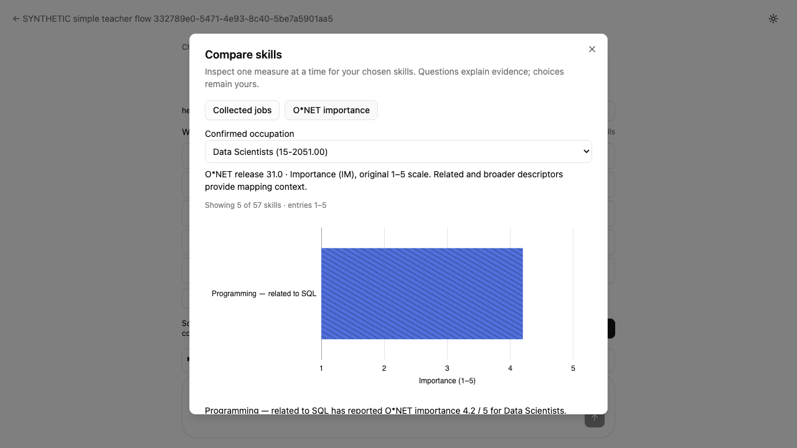

Final fix re-review
I1 and M1 addressed. No new Critical or Important breakage.
The strengthened acceptance test proves real teacher confirmation and a successfully completed mapping stream before controlled curriculum preparation. The helper requires an existing valid confirmation. The refreshed O*NET image shows the numeric bar.
Finding closure
| Finding | Verdict and inspected evidence |
|---|---|
| I1 Confirmation and stream success | Addressed. Course-scoped confirmation and mapping POST listeners precede Continue. Exact request revisions and returned shortlist/exclusions are compared with saved SQL. The completed SSE body must have one final successful terminal and no errors. Before preparation, state and SQL require the same run and exact confirmation including teacher identity, publication zero, no approval, and idle execution. The helper asserts current confirmation validity and no longer creates confirmation. |
| M1 Chart capture readiness | Addressed. Capture waits for the new SVG, exact 4.2 series, rendered related-to-SQL label and nonempty numeric bar path. The refreshed synthetic screenshot was visually inspected. |
Negative and positive proof
- Missing confirmation: the helper raises and the full SQL readback remains unchanged.
- Real HTTP 200 failed stream: a controlled model exception produces error and failed-terminal SSE events. The shared validator rejects before preparation is called; confirmation remains, review is absent, and no approval or publication occurs.
- Fresh successful flow: the new disposable course passes confirmation, completed SSE and authoritative state checks, then explicit projected approval with exact 57 IDs/digest, idempotency and unchanged nonempty student path, resource and quiz/mastery data.
- Parser regression: 2 tests pass, 0 fail. Error, failed, missing and duplicate terminal cases are independently represented. The final-event assertion was inspected in code; its test case also includes an error event.
Settled O*NET artifact
Synthetic fixture values; the related Programming descriptor remains context for SQL.

Review scope and readiness
One scoped re-review of the consolidated fix, with source assertions and exact negative/positive receipts inspected. All four acceptance-source hashes and three receipt hashes match the fix report. No new breakage or out-of-scope issue was found. Production application code is unchanged.
No suites were rerun because the supplied exact-code receipts answered the scoped questions. The reviewer made no browser actions, provider calls, database or Git mutations. The new report was parsed and its local links checked; it was not browser-rendered.
The required review closure is satisfied. The coordinator may continue the previously authorized release workflow and remains responsible for deployed source/image identity and behavior checks. This review does not certify live provider inference.
Reviewed base db4f57879f8e01c315cf303beec9a8ed8fdafc4a → head b5d29107e6729e37887d1ab987491d32a28f2bb9 · 14 October 2026